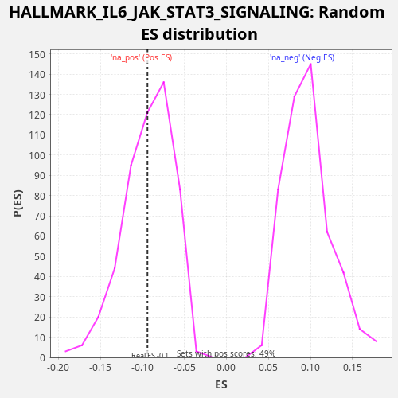

Profile of the Running ES Score & Positions of GeneSet Members on the Rank Ordered List
The same image in compressed SVG format
| Dataset | CCLE |
| Phenotype | NoPhenotypeAvailable |
| Upregulated in class | na_neg |
| GeneSet | HALLMARK_IL6_JAK_STAT3_SIGNALING |
| Enrichment Score (ES) | -0.09403958 |
| Normalized Enrichment Score (NES) | -1.0080063 |
| Nominal p-value | 0.4520548 |
| FDR q-value | 0.529293 |
| FWER p-Value | 1.0 |
| SYMBOL | RANK IN GENE LIST | RANK METRIC SCORE | RUNNING ES | CORE ENRICHMENT | |
|---|---|---|---|---|---|
| 1 | STAT1 | 169 | 0.529 | 0.0052 | Yes |
| 2 | CSF2RA | 387 | 0.068 | 0.0085 | Yes |
| 3 | IL9R | 694 | 0.016 | 0.0080 | Yes |
| 4 | HMOX1 | 800 | 0.012 | 0.0159 | Yes |
| 5 | CCR1 | 814 | 0.012 | 0.0277 | Yes |
| 6 | EBI3 | 1429 | 0.003 | 0.0143 | Yes |
| 7 | PIM1 | 1782 | 0.002 | 0.0118 | Yes |
| 8 | BAK1 | 1869 | 0.001 | 0.0205 | Yes |
| 9 | CSF2RB | 1934 | 0.001 | 0.0302 | Yes |
| 10 | IL1R2 | 2391 | 0.001 | 0.0234 | Yes |
| 11 | IFNAR1 | 2801 | 0.000 | 0.0186 | Yes |
| 12 | TNF | 2803 | 0.000 | 0.0309 | Yes |
| 13 | GRB2 | 2900 | 0.000 | 0.0392 | Yes |
| 14 | PTPN2 | 3176 | 0.000 | 0.0400 | Yes |
| 15 | PTPN11 | 3228 | 0.000 | 0.0502 | Yes |
| 16 | IL7 | 3296 | 0.000 | 0.0597 | Yes |
| 17 | PTPN1 | 3665 | 0.000 | 0.0566 | Yes |
| 18 | IL10RB | 3768 | 0.000 | 0.0646 | Yes |
| 19 | MAP3K8 | 4161 | 0.000 | 0.0605 | Yes |
| 20 | IRF9 | 4265 | 0.000 | 0.0685 | Yes |
| 21 | TNFRSF12A | 4709 | 0.000 | 0.0623 | Yes |
| 22 | DNTT | 4737 | 0.000 | 0.0735 | Yes |
| 23 | IL6 | 4789 | 0.000 | 0.0837 | Yes |
| 24 | STAT3 | 4921 | 0.000 | 0.0905 | Yes |
| 25 | MYD88 | 5743 | 0.000 | 0.0684 | No |
| 26 | HAX1 | 6359 | 0.000 | 0.0549 | No |
| 27 | JUN | 6644 | 0.000 | 0.0553 | No |
| 28 | IL15RA | 6647 | 0.000 | 0.0676 | No |
| 29 | CD9 | 6923 | 0.000 | 0.0684 | No |
| 30 | IFNGR1 | 6973 | 0.000 | 0.0787 | No |
| 31 | STAT2 | 7649 | 0.000 | 0.0626 | No |
| 32 | TNFRSF1A | 7768 | 0.000 | 0.0700 | No |
| 33 | IL13RA1 | 8105 | 0.000 | 0.0683 | No |
| 34 | IL1R1 | 8108 | 0.000 | 0.0805 | No |
| 35 | IL6ST | 8435 | 0.000 | 0.0792 | No |
| 36 | LTBR | 9547 | 0.000 | 0.0448 | No |
| 37 | CBL | 11102 | -0.000 | -0.0081 | No |
| 38 | FAS | 11301 | -0.000 | -0.0041 | No |
| 39 | STAM2 | 11737 | -0.000 | -0.0100 | No |
| 40 | TNFRSF21 | 12596 | -0.000 | -0.0337 | No |
| 41 | IL4R | 12621 | -0.000 | -0.0224 | No |
| 42 | IL12RB1 | 13258 | -0.000 | -0.0367 | No |
| 43 | LEPR | 13320 | -0.000 | -0.0269 | No |
| 44 | IL2RG | 13498 | -0.000 | -0.0220 | No |
| 45 | CSF3R | 13974 | -0.000 | -0.0296 | No |
| 46 | TYK2 | 14196 | -0.000 | -0.0266 | No |
| 47 | OSMR | 14228 | -0.000 | -0.0155 | No |
| 48 | TGFB1 | 14624 | -0.000 | -0.0198 | No |
| 49 | IL17RA | 14929 | -0.000 | -0.0202 | No |
| 50 | SOCS1 | 15001 | -0.000 | -0.0108 | No |
| 51 | ACVR1B | 15034 | -0.000 | 0.0002 | No |
| 52 | CSF1 | 15384 | -0.000 | -0.0022 | No |
| 53 | CD44 | 15487 | -0.000 | 0.0059 | No |
| 54 | IL3RA | 15673 | -0.000 | 0.0105 | No |
| 55 | IFNGR2 | 15829 | -0.000 | 0.0163 | No |
| 56 | IRF1 | 16872 | -0.000 | -0.0151 | No |
| 57 | IL2RA | 17629 | -0.000 | -0.0345 | No |
| 58 | PDGFC | 18830 | -0.001 | -0.0726 | No |
| 59 | CD38 | 18966 | -0.001 | -0.0659 | No |
| 60 | TLR2 | 19542 | -0.002 | -0.0777 | No |
| 61 | IL17RB | 19626 | -0.002 | -0.0689 | No |
| 62 | LTB | 20035 | -0.003 | -0.0737 | No |
| 63 | SOCS3 | 20160 | -0.003 | -0.0665 | No |
| 64 | A2M | 20718 | -0.006 | -0.0776 | No |
| 65 | CD36 | 20883 | -0.007 | -0.0721 | No |
| 66 | PLA2G2A | 21176 | -0.010 | -0.0721 | No |
| 67 | ITGB3 | 21348 | -0.012 | -0.0669 | No |
| 68 | INHBE | 21553 | -0.016 | -0.0631 | No |
| 69 | CD14 | 21912 | -0.027 | -0.0658 | No |
| 70 | CXCL10 | 22585 | -0.103 | -0.0817 | No |
| 71 | CXCL11 | 22658 | -0.125 | -0.0724 | No |
| 72 | PIK3R5 | 22678 | -0.131 | -0.0608 | No |
| 73 | CNTFR | 22897 | -0.237 | -0.0576 | No |
| 74 | ACVRL1 | 22967 | -0.284 | -0.0482 | No |
| 75 | CSF2 | 23137 | -0.456 | -0.0429 | No |
| 76 | CXCL3 | 23216 | -0.605 | -0.0339 | No |
| 77 | IL18R1 | 23271 | -0.753 | -0.0238 | No |
| 78 | TNFRSF1B | 23432 | -1.434 | -0.0182 | No |
| 79 | CXCL1 | 23717 | -5.911 | -0.0178 | No |
| 80 | IL1B | 23804 | -9.914 | -0.0090 | No |
| 81 | ITGA4 | 23835 | -11.876 | 0.0021 | No |

{kind=link}
{kind=link}